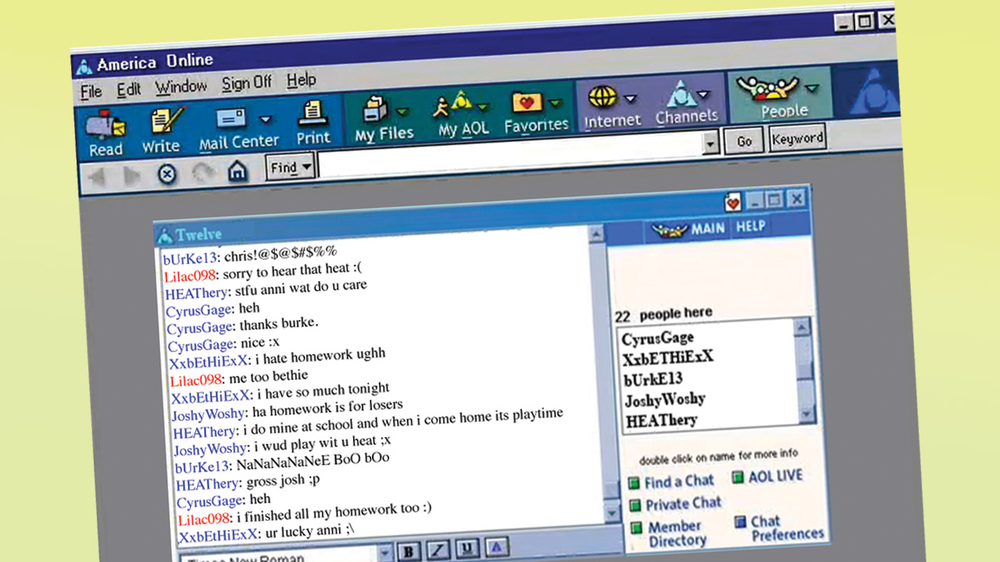
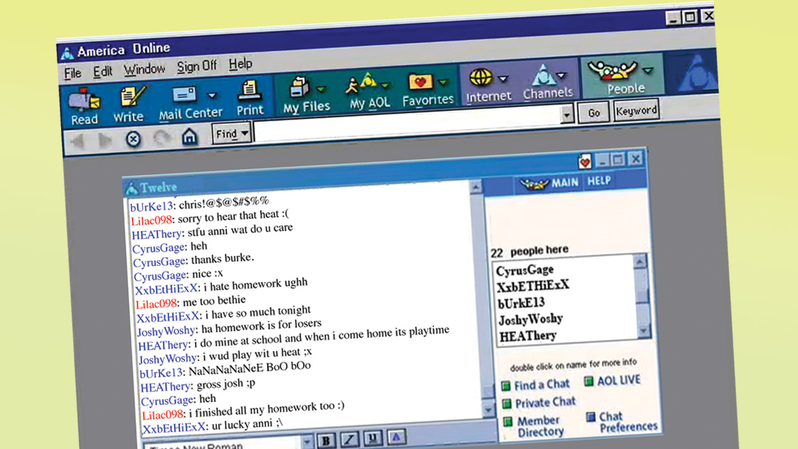

Over the past year, we've learned a lot about the extent to which the American government monitors the Internet.
You could argue (and I do!) that this data is actually safer in government hands. In the US, at least, there's no restriction on what companies can do with our private information, while there are stringent limits (in theory) on our government.
It is legitimately frightening to have the
government spying on all its citizens. What I take issue with is the idea that you can have different kinds of mass surveillance. If these vast databases are valuable enough, it doesn't matter who they belong to. The government will always find a way to query them.
Americans have an almost perverse
faith in the rule of law. They believe that, as long as the secret courts are making sure the secret police obey the secret laws, our democracy is safe. It's silly to pretend that keeping mass surveillance in private hands would protect us from abuses by government. The only way to keep user information safe is not to store it.
Public and private surveillance are in a curious symbiosis with each other.
Try to avoid
the corporate tracking system,and you catch the attention of the police instead.
As a
wise man once said, “If you have something that you don’t want anyone to know, maybe you shouldn’t be doing it in the first place.”
But there are also dangerous scenarios that don't involve government at all, and that we don't talk enough about. I'll use Facebook as my example. To make the argument stronger, let's assume that everyone currently at Facebook is committed to user privacy and doing their utmost to protect the data they've collected.
What happens if Facebook goes out of business, like so many of the
social networks that came before it? What happens to all that data?
We've all had the experience of deciding to share information with a small website, only to watch them later get acquired by a large company we would have preferred not see our data. But once you share it, you have no control over where it goes next. Sooner or later, one of the giant websites will meet a similar fate. And then we'll have to scramble, try to remember exactly what they learned about us over the years, and what the consequences of that might be.
What happens if Facebook hires their own
Snowden, someone who for ideological reasons decides that data should be published?
What if they hire a researcher who releases three months of 'anonymized' data that turns out not to be anonymous at all, like happened at
AOL?
Well, that could never happen again, right? No one could violate user privacy on that scale.
There is a lot of potential for harm around these vast collections of private data. To some extent, the focus on government spying prevents us from thinking harder about the real pitfalls of a permanent record.
Out of curiosity, how many people here would be comfortable having their Google search history published?
[No hands go up in a room of 800 people]. No Bing users here, I see.
What are you all trying to hide?
These big collections of personal data are like
radioactive waste. It's easy to generate, easy to store in the short term, incredibly toxic, and almost impossible to dispose of. Just when you think you've buried it forever, it comes leaching out somewhere unexpected.
Managing this waste requires planning on timescales much longer than we're typically used to. A typical Internet company goes belly-up after a couple of years. The personal data it has collected will remain
sensitive for decades.
 
